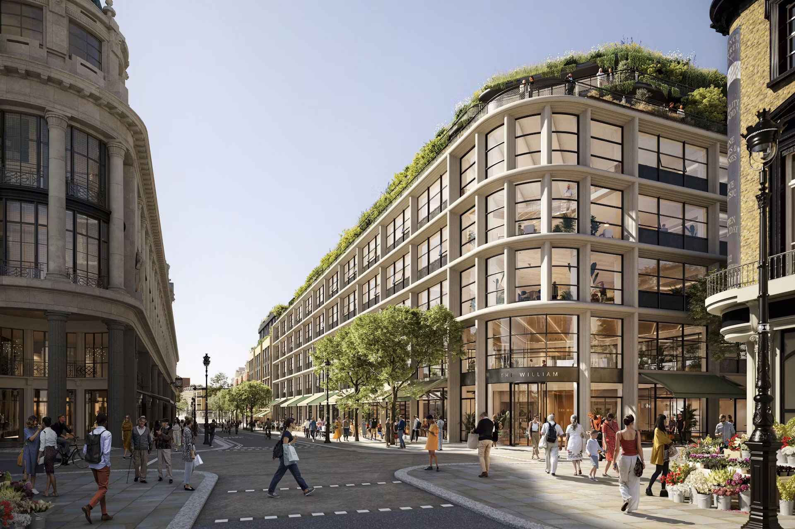
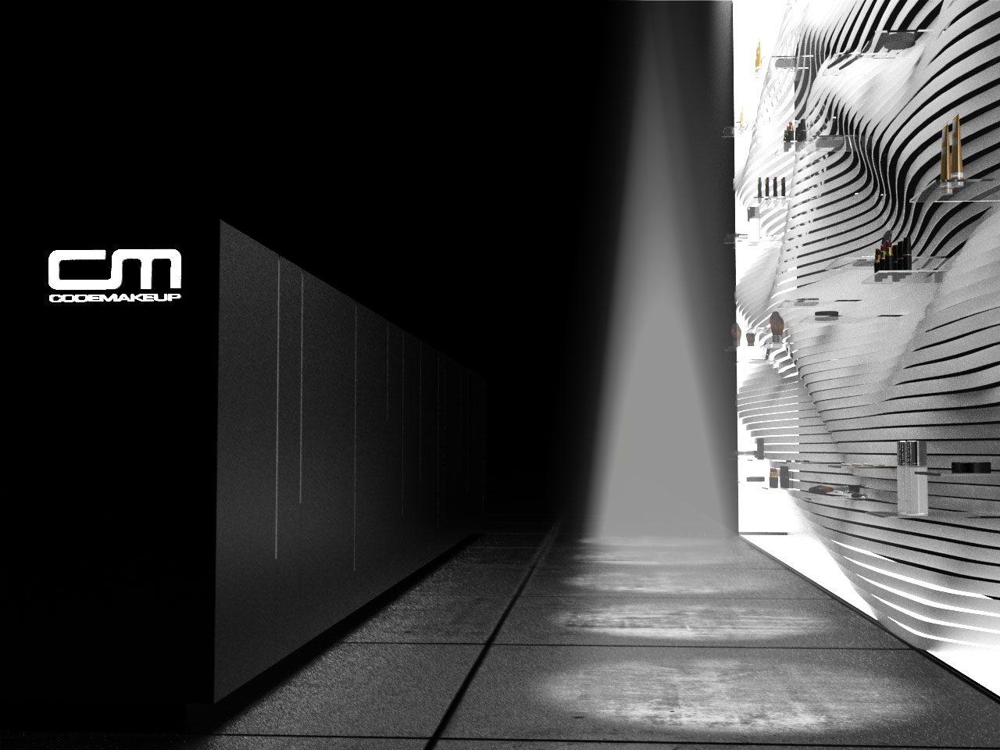
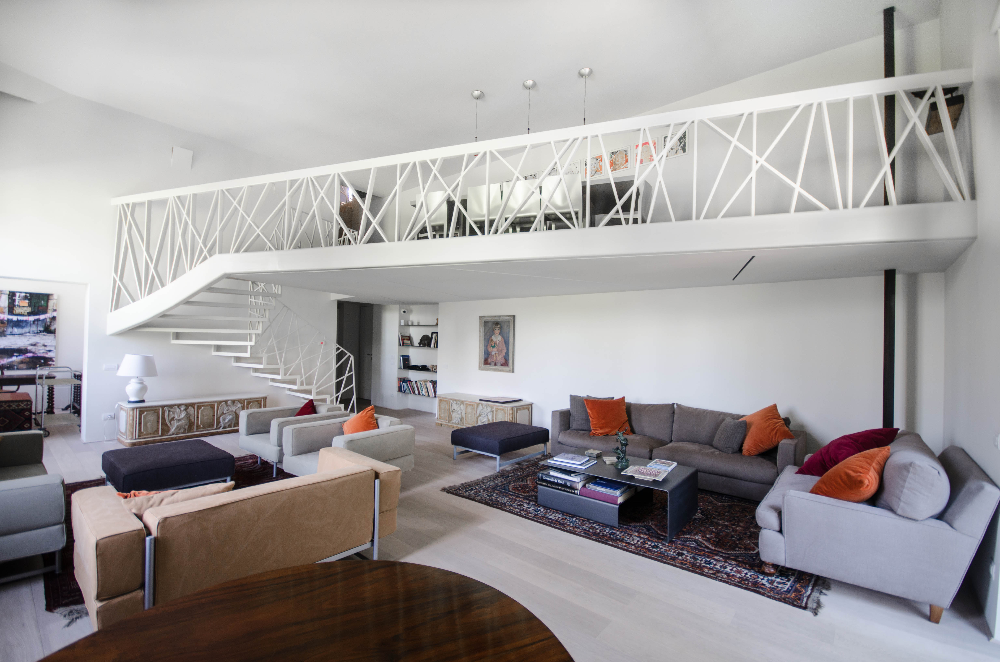
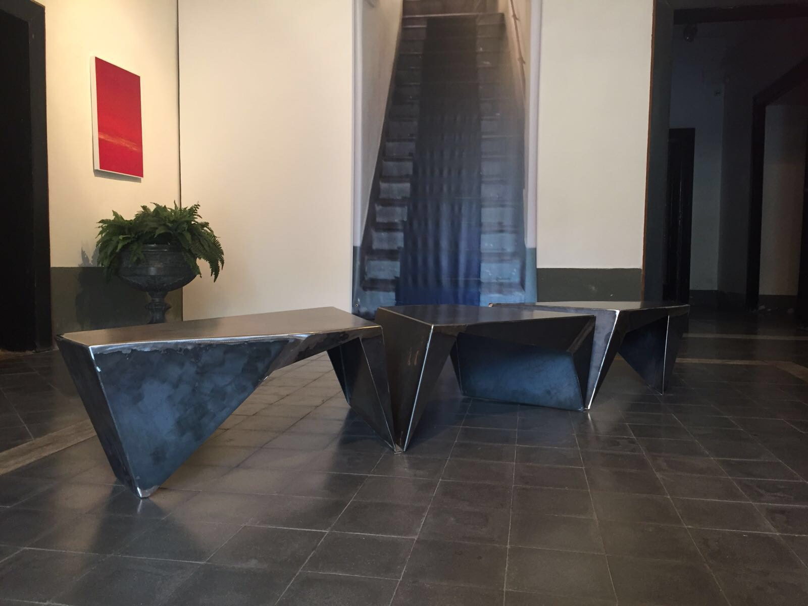
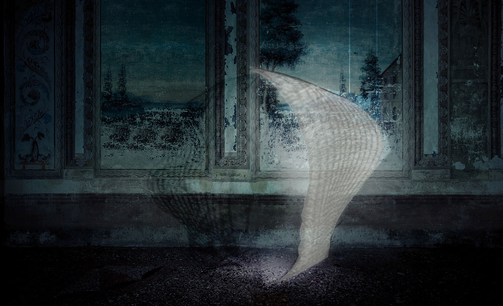
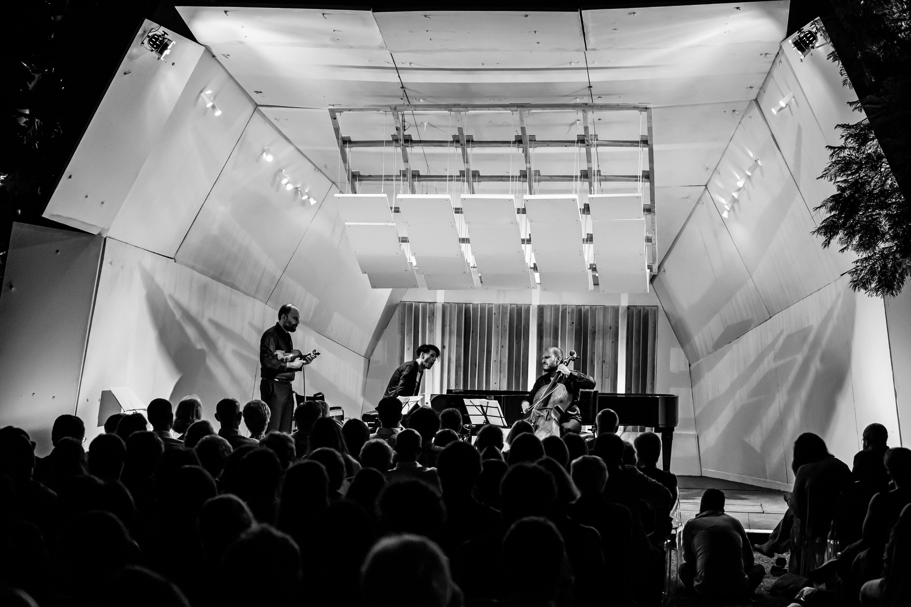

Selected Projects
Architecture, interiors and product design spanning heritage, hospitality, residential and research.

© Foster + Partners
The Whiteley, London
Grade II listed former department store re‑imagined as mixed‑use retail, leisure and residences. Restores the historic façade and introduces a new public courtyard with residential, retail, cinema, gym and hotel.

© Foster + Partners
Project Bluesky, London
World class mixed-use retail and office developement in Mayfair centered on sustainability and wellness‑driven workplace strategy.
Hellenikon Beach Hotel, Greece
Coastal resort integrated with the Ellinikon masterplan, balancing views, shading and coastal public realm.
Bel Air Villa, Los Angeles
Private hillside residence with cantilevered terraces and glass pavilions connecting interior and landscape.

© Foster + Partners
Queensway Parade, London
Retail and residential infill that activates the streetscape and public realm along Queensway.

© GRD Design
Plan de Campagne Mall, Marseille
Open‑air shopping centre concept with lightweight canopies and clear pedestrian flows.

© InLogic Design
CM Concept Store, London
Flexible wall system and shelving for a cosmetics flagship; modular displays for attraction and mass marketing.

© CMMKM
Apartment Renovation, Rome
Duplex conversion; a bespoke mezzanine links the old and new units and creates formal and family spaces.

© CMMKM
Coffee Table, Naples
Folded‑steel coffee table fabricated by a local blacksmith; three interlocking pieces for modular use.

© InLogic Design
Responsive Lighting Skin
OLED‑based façade prototype responding to user proximity; explores flexible components and control.

© Gabriella Lucci, Gabriele Mirra, Eduardo Pignatelli
ReS 4.0 Acoustic Shell, Sicily
Timber structure, hand‑built in five days, enabling open‑air chamber music for an audience of ~600.